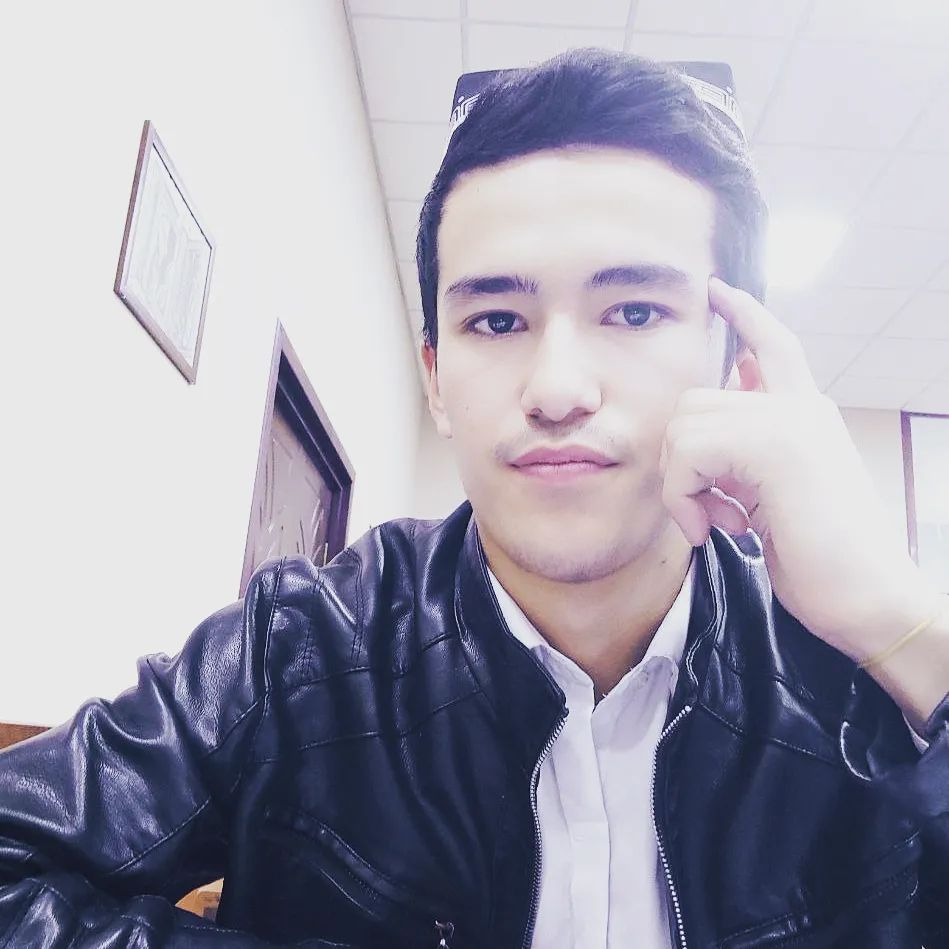

Umarbek Fazliddinovich

Summary
I am a muslim, introvert, minimalist, stoic web developer.
Education
Specialized State Boarding School, Samarkand
September 2013 - May 2023
Studied at the most prestigious school in the region
EXPERIENCE
School Newspaper, Samarkand — Chief editor
- Wrote articles on various topics such as school events, student achievements, sports, and current affairs
- Edited and proofread articles submitted by other writers
- Coordinated with the editor-in-chief and the layout designer to ensure the quality and timeliness of the publication
- Conducted interviews and research to gather information and facts for the articles
Skillset
Excellent communication and interpersonal skills
Proficient in English and Uzbek languages
Familiar with Microsoft Word, PowerPoint, and Excel
Creative and analytical thinker
Responsible and reliable
Fast learner
My Hobbies
- Writing blog posts, stories
- Reading books broardly
- Pink Pong
- Having conversation with like-minded people
Porjects
Movie Ranking Project

Birthday Invite Project